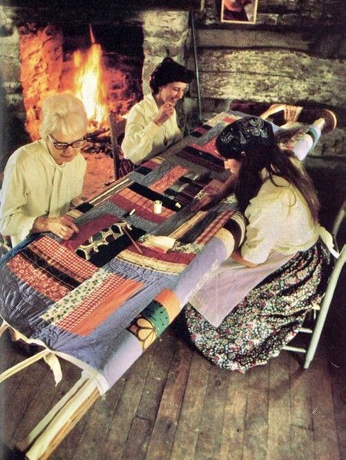
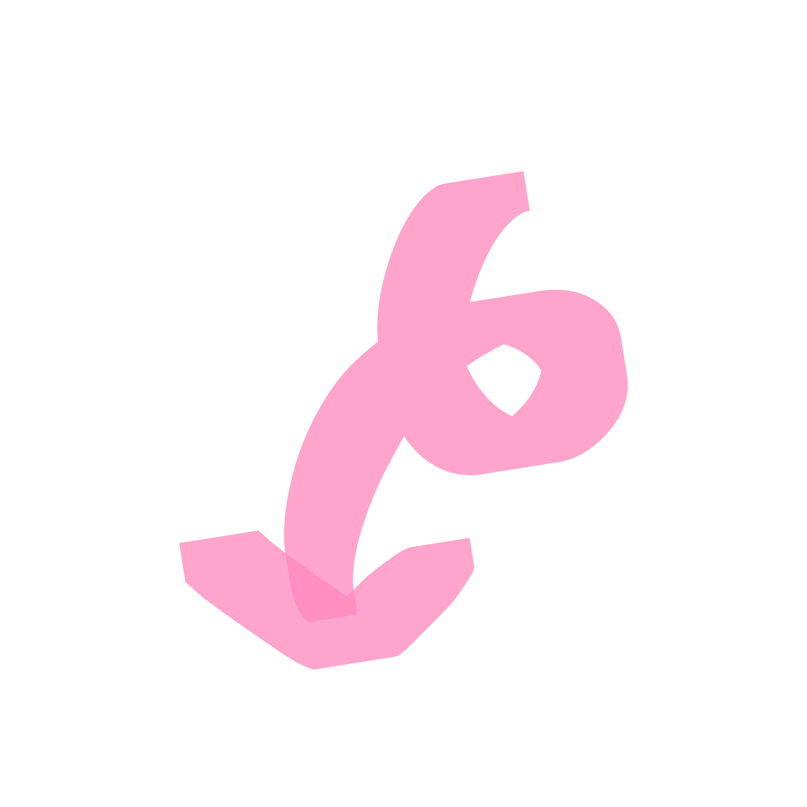

19세기 미국의 퀼트 문화
18세기 후반부터 19세기는 유럽에서 이주한 정착민들이 미국에 농가를
세우던 시기였어요. 산업화 이전이라 천이 귀했고 수입 원단은 굉장히
비쌌어요. 여성들은 헌 옷이나 자투리 천 조각을 재활용해서
새로운 천을
만들기 시작했고 이게 바로 미국 퀼트 문화의 시작이 되었어요.
특히 흑인 여성들은 노예 신분으로서 천을 구하기 어려워 주인 집의
헌 천을 모아 퀼트를 만들었어요. 이 중 일부는 비밀 메시지를 담은
코드 퀼트(Code Quilt)로도 알려져 있어요. 지하철도와 같은 탈출 통로
에서 지도나 신호 역할을 했다는 설화 같은 이야기도 전해지고 있어요.

여성들은 집안일과 육아에 묶여 있었지만,
퀼트를 통해
창의성을 발휘하고 이웃 여성들과 소통했어요.
농한기가
찾아오면 마을 여성들이 모여 퀼트를 함께 만드는
퀼팅 비(Quilting Bee)라는 모임을 열곤 했어요.
이로 인해 퀼팅은 여성들의 연대와 우정을 상징했어요.
대표적인 미국 전통 퀼트 패턴에는 가정과 따뜻한 불빛을 의미하는 Log Cabin(통나무집),
희망과 신앙을
상징하는 별 패턴, 결혼을 축하하고 사랑과 연합을
뜻하는 더블 웨딩 링이 있어요.
이처럼 퀼트는 만드는 사람의
가치관, 신앙, 가족사를 드러내는
시각적 기록물이 되었어요.
집에 상주해야
했던 여성들이나 노예 신분이었던
흑인들이 억압 속에서 자유를
염원하는 예술적 상징물로서
사용하기도 했어요.

Double Wedding Ring
Pattern
Log Pattern
Star Pattern